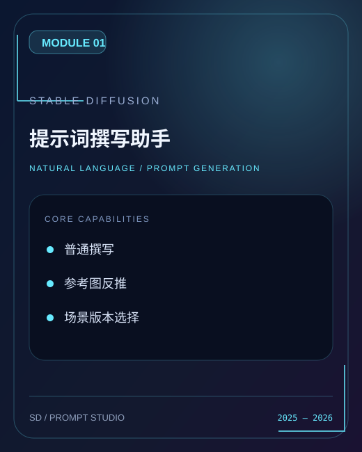
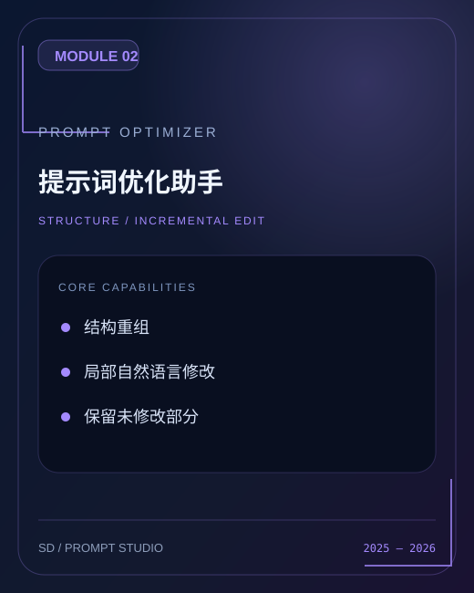
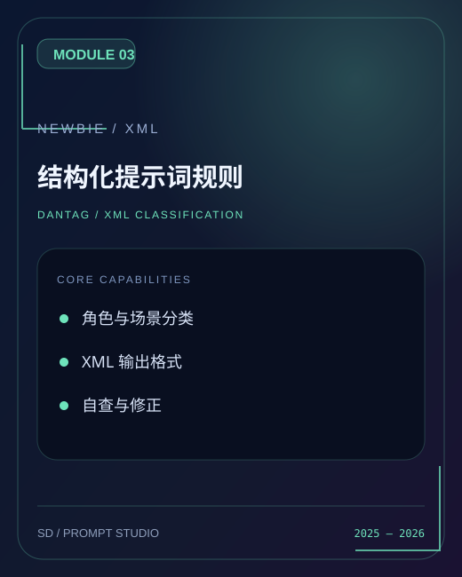
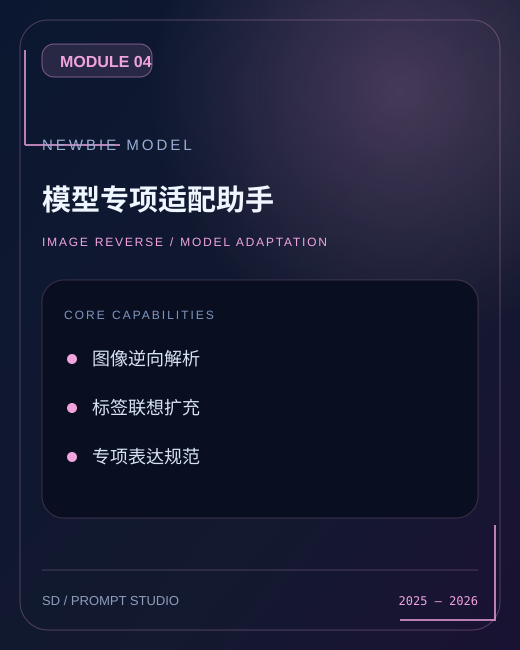

Problem 01
提示词会写，但难写好
很多用户知道要写 Prompt，却不知道如何系统组织角色、场景、镜头、光影与氛围。结果往往是标签零散、质量不稳定，难以复用。
- 专业标签学习成本高
- 自然语言难直接转成高质量 Prompt
- 写完后仍不清楚结构问题出在哪里
面向 Stable Diffusion 创作者的 AI 辅助产品。围绕提示词编写门槛高、参考图转译难、局部修改成本高、模型适配分散等问题，规划 Discord 社群 Bot 与本地客户端使用方案，逐步形成了由「撰写」「优化」「图像反推」「Newbie 专项规则」组成的产品能力矩阵。
这不是一个简单的“提示词模板合集”。我把四份功能文档中分散的规则、使用方式和场景能力，整理为一个清晰的产品结构：先看清问题，再定义产品能力，最后形成可交付、可复用、可扩展的创作工具。
用于了解 Prompt 编写、图片复刻、局部修改等真实使用障碍。
帮助定位核心需求优先级：撰写、优化、反推与模型专项规则。
对应通用撰写、Prompt 优化、XML 结构化与 Newbie 模型适配。
让用户用更低门槛、更稳定的方式完成 Stable Diffusion 创作。
很多用户知道要写 Prompt，却不知道如何系统组织角色、场景、镜头、光影与氛围。结果往往是标签零散、质量不稳定，难以复用。
用户经常想复刻一张图里的角色、动作、构图与色彩，却很难完整描述这些要素，更难输出一段逻辑清晰、字段完整的 Stable Diffusion 提示词。
当用户只想修改人物、色调、动态或饰品时，通常需要重写大量标签，成本高且容易破坏原有画面条件。因此需要局部编辑与规则保留机制。
项目原始材料由四份产品文档构成。这里将使用指南、交互案例与结构化规则重组为一张产品能力矩阵，明确每项能力对应的创作任务、规则机制与用户价值。

用于从零开始撰写 Stable Diffusion 提示词，覆盖日常创作与图片反推等不同版本。

用于整理已有 Prompt 结构，并接受自然语言修改指令，完成指定元素替换或重组。

把 Danbooru 标签、自然语言或图像内容，统一转成可检查、可检索、可复用的 XML 结构。

进一步针对 Newbie 的输出特点补充图像逆向工程、标签扩充和结构化 Prompt 生成逻辑。
用户不会先关心“你写了哪些规则”，他们先关心的是：我现在有一个想法 / 一张图 / 一段 Prompt，到底怎么快速得到可用结果。所以这里按使用旅程来展示产品，而不是按文档顺序堆内容。
用户不需要先会写专业标签，只需要用自然语言描述画面，系统再负责把角色、动作、场景、构图与光影拆成结构。
一个在图书馆窗边看书的女孩，下午阳光，安静氛围，偏日系动漫风。
Newbie 专项文档包含详细的语义分类与 XML 字段规则。本节将它们归纳为六个设计维度，展示如何把零散的绘画要求转化为可拆解、可复用、可检视的提示词结构。
对人物身份和视觉特征进行拆解，适合支撑角色复刻与局部编辑。
把静态描述变成动作层面的可控信息，是复刻“神态、姿势、动态感”的关键。
区分室内外、自然与城市、时间与天气，帮助画面从“角色”走向“完整场景”。
用于补充画面中的辅助元素，也支持模型在识别“图书馆 / 武器 / 装饰”时进行联想扩充。
这是很多普通 Prompt 写作里最容易缺失的层次，也是提高画面可控性的重点。
不是只有标签。系统还会保留完整画面描述，方便用户理解最终 Prompt 想表达的整体意图。
这部分用来回答面试里最关键的问题：为什么选择做结构化输出？为什么支持图像反推？为什么还要支持自然语言局部修改？为什么需要 Newbie 的专项规则？
因为用户真正的问题不是“拿到一段完整的长 Prompt”，而是希望知道每个画面要素分别放在哪里、以后如何局部修改和复用。结构化输出把模糊经验变成可编辑、可检查的产品规则。
因为用户进入产品时所拥有的信息不同：有人只有一个创意想法，有人已经有 Prompt，还有人手上只有参考图。产品需要适应任务，而不是要求所有人都按同一格式输入。
优化文档中的案例很有代表性：用户不想重写一切，只想把人物换成初音未来，把色调改成青色、保留背景、增强动态感。这个场景说明产品不是只负责“生成”，还要负责“增量编辑”。
通用 Prompt 并不一定能在不同模型上稳定工作。Newbie 文档的价值就在于：你没有停留在“通用可用”，而是继续针对特定模型的表达特点、图像对齐需求和结构化方式做了补充规则。
产品面向 Discord 社群提供 Bot 对话使用路径，同时提供基于 Gemini API、Chatbox 与 Cherry Studio 的本地客户端使用指南，覆盖不同环境和技术熟练度的创作者。
产品不是单一界面，而是围绕用户使用环境进行组织：在线社群里强调快速交互与即时任务，本地客户端里强调配置可行、调用稳定与长期使用。
本站已整理为 GitHub Pages 静态展示项目，集中展示产品定位、用户场景、主要功能、结构规则与交付方式。
sd-prompt-studio。https://你的用户名.github.io/仓库名/ 形式的网址，可直接写进简历。这里不是为了再重复功能，而是为了让页面更像一个产品案例展示：展示用户怎么说、产品怎么理解、输出是怎样的。通过真实操作场景，让功能与用户价值之间的关系更加具体。
用户只输入“一个在图书馆窗边看书的女孩，温暖午后，柔和光影”。产品不是直接胡乱补标签，而是按角色、背景、光影、氛围等字段组织 Prompt。
用户基于已有提示词提出自然语言编辑请求：把人物改为初音未来、色调改为青色、背景不变、动态更生动、宝石改为青绿色。产品负责重组与保留逻辑。
上传一张参考图后，系统按人物、服装、场景、镜头、构图、光影等角度拆分内容，最终转写为结构化 XML Prompt，服务后续二次创作与风格复刻。
本节说明各原始文档与产品能力之间的对应关系。出于版权、隐私与配置安全考虑，暂不公开完整原始 PDF 和内部提示词文件。
支持通用创作、不同使用版本及图片反推入口，是产品最基础的能力来源之一。
提供结构重组与自然语言编辑场景的功能依据，明确了“局部修改”这一重要使用旅程。
给出了详细的要素拆分体系和 XML 字段框架，是页面中“结构化系统”部分的主要依据。
补充图像逆向工程、标签扩充和模型专项适配逻辑，使项目从通用能力延伸到更细的模型场景。
本项目展示页基于 GitHub Pages 对外发布。后续后续可补充 Discord Bot 原始截图、交互录屏与生图对照案例，以增加可验证的实际产出证据。